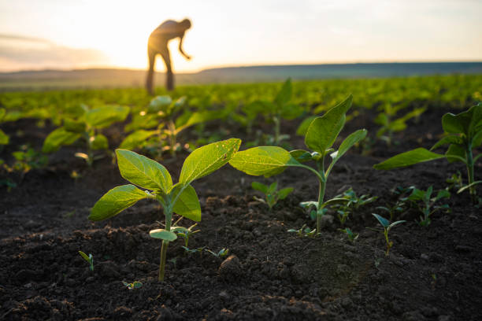

কোরবানি শুধু একটি পশু ক্রয় নয় - এটি একটি ইবাদত, একটি আমানত, একটি মানসিক প্রশান্তির নাম। গরুটির সুস্থতা, নিরাপদ পরিবেশ, হালাল পদ্ধতি ও কোরবানির উপযুক্ত অবস্থা - এই নিশ্চয়তাই সবচেয়ে গুরুত্বপূর্ণ। খামার ভিটা সেই নিশ্চয়তা দেওয়ার জন্যই পরিচালিত, স্বচ্ছ ও ইসলামী নীতিতে গরু পালন করে।
| টিকা/ঔষধের ধরণ | রোগ/উদ্দেশ্য | মূল্য (প্রায়) |
|---|---|---|
| FMD টিকা | ক্ষুরা রোগ | ৳ ২৫০ |
| LSD টিকা | ত্বক নডিউল রোগ | ৳ ৩০০ |
| BQ টিকা | বাতিলা | ৳ ৫০ |
| Anthrax টিকা | অ্যানথ্রাক্স/প্লেগ | ৳ ৫০ |
| কৃমিনাশক (Deworming) | অন্ত্র ও পাকস্থলীর কৃমি | ৳ ৩০০ |
| মিনারেল মিক্সচার | হজম শক্তিশালীকরণ | ৳ ২৫০ |
| ভিটামিন-মিনারেল সাপ্লিমেন্ট | রোগ প্রতিরোধ ক্ষমতা বৃদ্ধি | ৳ ২৫০ |
| মোট খরচ (প্রতি বছর) | ৳ ১,৪৫০+ | |
*এই টিকাগুলো নিয়মিত দেওয়া হয়, ফলে গরু রোগমুক্ত থাকে এবং কোরবানির জন্য নিরাপদ হয়।
| উপাদান | অনুপাত | মূল্য/কেজি |
|---|---|---|
| ভুট্টা | ৮.০০% | ৳ ১৩ |
| গমের ভূষি | ২.০০% | ৳ ৬৫ |
| খৈল | ১.০০% | ৳ ৮ |
| ওজন (কেজি) | মোট খাদ্য খরচ (টাকা) |
|---|---|
| ১৫০-২০০ | ৳ ১০,০০০-১৪,৫০০ |
| ২০১-২৫০ | ৳ ১৬,০০০-১৮,০০০ |
| ২৫১-৩০০ | ৳ ১৯,৫০০-২১,৫০০ |
| ৩০১-৩৫০ | ৳ ২৩,৫০০-২৫,০০০ |
| ৩৫১-৪০০ | ৳ ২৭,০০০-২৯,০০০ |
| ৪০১-৪৫০ | ৳ ৩০,৫০০-৩২,৫০০ |
| ৪৫১-৫০০ | ৳ ৩৪,০০০-৩৬,০০০ |
কোরবানি ও আমাদের সেবা নিয়ে আপনার প্রশ্নের উত্তর

খামারের যাত্রা শুরু হয় ২০২১ সালে একটি ছোট পারিবারিক উদ্যোগ হিসেবে। বর্তমানে আমরা ২০টিরও বেশি গরু ও বিভিন্ন ফলের বাগান নিয়ে গর্বিত। আমাদের লক্ষ্য - নিরাপদ, স্বাস্থ্যসম্মত ও ভোক্তা-বান্ধব খাদ্য উৎপাদন ও সরবরাহ করা।
প্রতিষ্ঠানটি উৎপাদন থেকে সরবরাহ পর্যন্ত প্রতিটি ধাপে গুণগত মান, নিরাপত্তা ও স্বচ্ছতা বজায় রাখে। আধুনিক ও হল্ট সাইজ ফার্মিং পদ্ধতি অনুসরণ করে রাসায়নিক-মুক্ত, কীটনাশক-মুক্ত ও হরমোনমুক্ত খাদ্য সরবরাহে বিশেষ গুরুত্ব দিই।
বাংলাদেশে একটি দায়িত্বশীল, স্বচ্ছ ও হল্ট সাইজ ফার্মিং এর মডেল হিসেবে গড়ে তোলা, যেখানে ভোক্তা ন্যায্য মূল্যে নিরাপদ খাদ্য পাবেন।